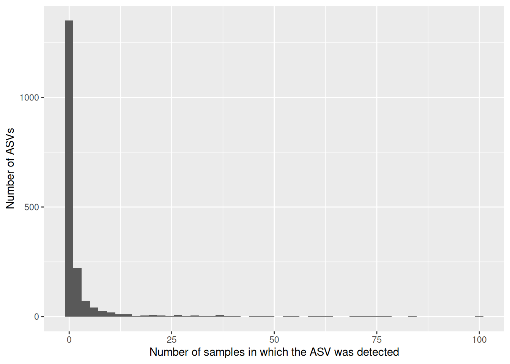
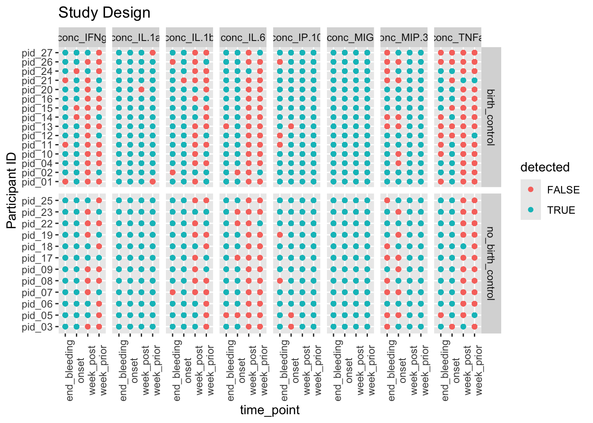
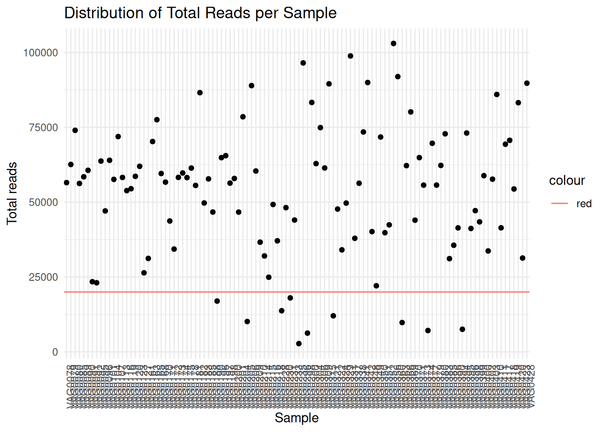
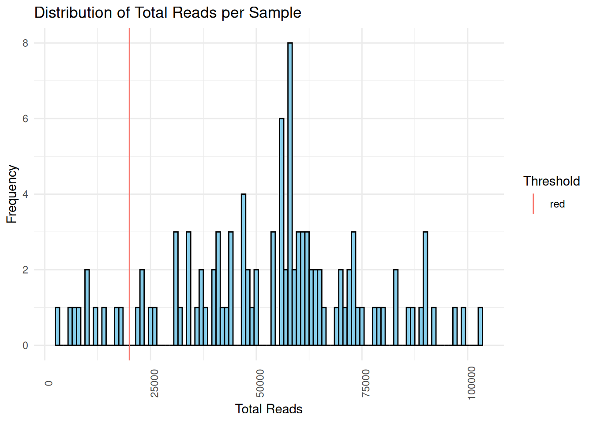
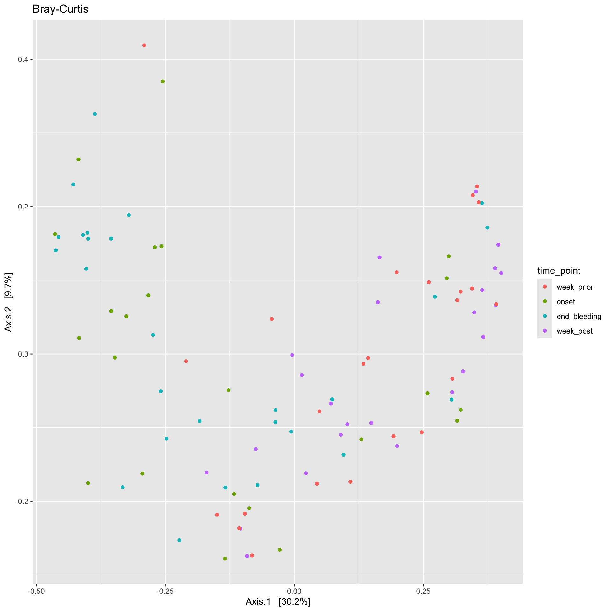
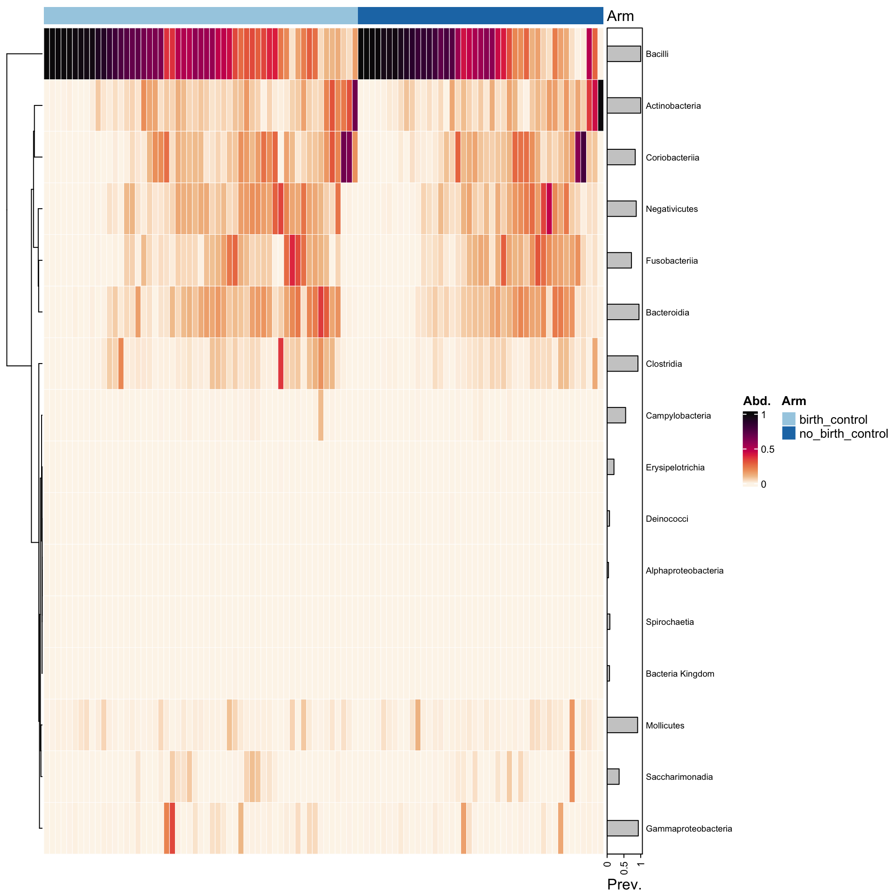
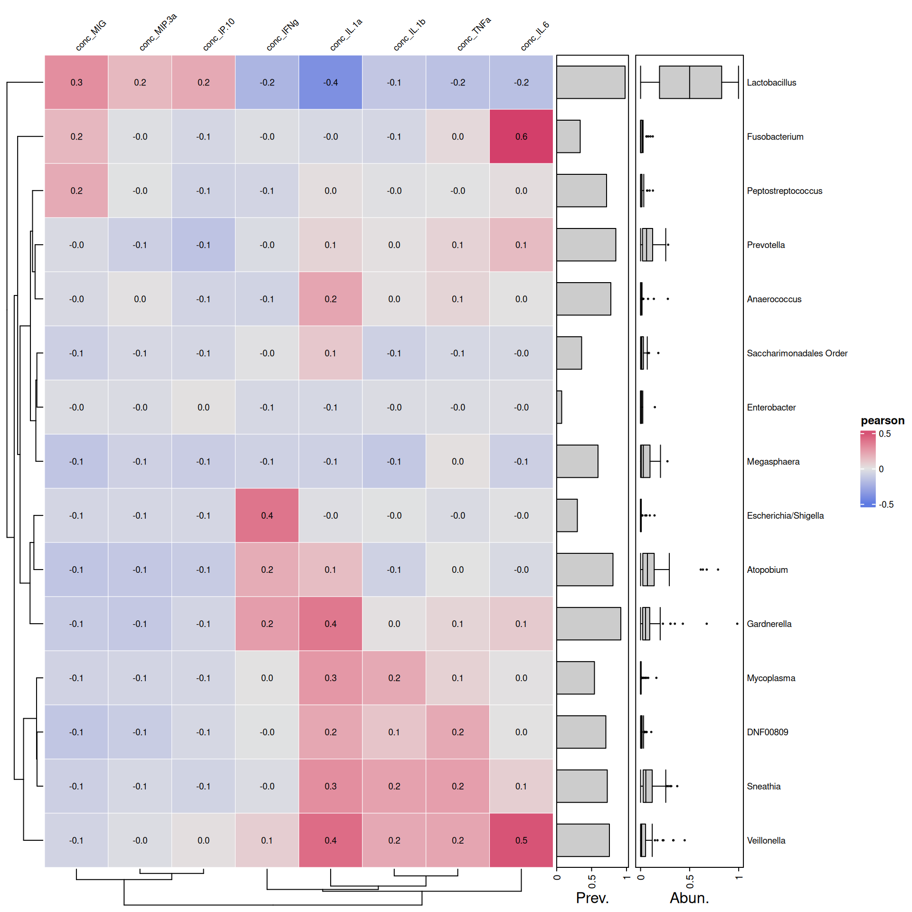

Attaching package: 'ggpubr'
The following object is masked from 'package:microViz':
stat_chull
library(cowplot)
Attaching package: 'cowplot'
The following object is masked from 'package:ggpubr':
get_legend
The following object is masked from 'package:lubridate':
stamp
library(RColorBrewer)
Load data
amplicon_ids <-read_csv("data/Group B Dataset Menstruation/04_period_amplicon_sample_ids.csv")samp_id <-read_csv("data/Group B Dataset Menstruation/00_sample_ids_period.csv")participant_metadata <-read_csv("data/Group B Dataset Menstruation/01_participant_metadata_period.csv")flow <-read_csv("data/Group B Dataset Menstruation/03_flow_cytometry_period.csv")luminex <-read_csv("data/Group B Dataset Menstruation/02_luminex_period.csv")
Load count and tax table
all_samples_count_table <-readRDS("data/Group B Dataset Menstruation/gv_seqtab_nobim.rds")all_samples_tax_table <-readRDS("data/Group B Dataset Menstruation/gv_spetab_nobim_silva.rds")
Make a phyloseq obj
#creating sample data for the phyloseqbc_sample_data <- amplicon_ids %>%left_join(samp_id %>%select(-arm), by =c("pid","time_point")) %>%# merges sample idsleft_join(participant_metadata %>%select(-arm), by ="pid") %>%# merges participant metadatamutate(arm_timepoint =str_c(arm, time_point, sep ="_")) %>%#creating a arm and timepoint column for later plottingleft_join(flow, by ="sample_id") %>%# merges flowleft_join(luminex %>%# merges luminexpivot_wider(names_from = cytokine, values_from =c(conc,limits)), by ="sample_id") %>%mutate(arm_timepoint =str_c(arm, time_point, sep ="_")) %>%column_to_rownames("amplicon_sample_id")
count_table <- all_samples_count_table %>%as.data.frame() %>%rownames_to_column("amplicon_sample_id") %>%filter(amplicon_sample_id %in% bc_ids) %>%#filtering the count data by bc idsmutate_at(vars(-amplicon_sample_id), as.numeric) %>%column_to_rownames("amplicon_sample_id") %>%select(where(~sum(.) !=0)) # removing unused ASVs - when the sum of a column is 0
Sparsity of my count table
a<-as.matrix(count_table)class(a)
[1] "matrix" "array"
sum(a ==0) /length(a)
[1] 0.9678092
##0.97
data.frame(asv_prev =colSums(a >0)) %>%ggplot(aes(x = asv_prev)) +geom_histogram(bins =50) +labs(x ="Number of samples in which the ASV was detected",y ="Number of ASVs")

sum(is.na(a))
[1] 0
#0
Most ASVs are absent from most samples. Sparsity is a common characteristic of microbiome data due to several reasons:
Biological Diversity: Microbiome samples often contain a large number of microbial taxa, but each individual taxa may be present in only a subset of samples. Sequencing Depth: The depth of sequencing may not be sufficient to capture all microbial taxa present in a sample, leading to many undetected taxa. Experimental Conditions: Factors such as sample handling, DNA extraction methods, and PCR amplification biases can influence which taxa are detected and at what abundance.
#filter the taxa table so there is only asvs for the bc samplestax_table <- all_samples_tax_table %>%as.data.frame() %>%rownames_to_column("tax_table_asv") %>%filter(tax_table_asv %in% asvs) %>%# filters the tax table by the asvs we wantcolumn_to_rownames("tax_table_asv") %>%as.matrix()
Are there NAs in the tax table?
class(tax_table)
[1] "matrix" "array"
sum(is.na(tax_table))
[1] 1869
#2112 NAs
Many! What could be the source of NAs in the taxa table?
Describe the structure of the experimental design
Aim To investigate whether taking birth control is associated with vaginal inflammation throughout the menstrual cycle.
Study Description This is an observational study to evaluate the relationship between birth control and vaginal inflammation in response to menstruation. 16S rRNA sequencing was done to characterize patient microbiome composition. Cytokine levels (in ug/mL of vaginal fluid) were also measured by Luminex. We also looked at the number and type of immune cells in the vagina using Flow Cytometry. Data was collected at four timepoints; before, at the start, the end, and after menstruation.
Make a long phyloseq data frame
psmelt will provide us with a data frame with all the variables within the phyloseq object
##Research question Does Birth control #arm change inflammation #8 cells and 8 cytokines during menstruation? # time_point relative to menstruation period # Assess the study design To do this, I extracted variables of interest from the melted phyloseq object
my_variables %>%# checking if there is 16S data available for each individualmutate(detected = concentration >1) %>%ggplot(aes(x=time_point,y=pid, color= detected))+# color indicates detectebility of cytokine concgeom_point()+# point indicates availability of cytokine value for each individual facet_grid(rows =vars(arm), cols =vars(cytokines), scales ="free_y")+theme(axis.text.x =element_text(angle =90))+labs(title ="Study Design", y ="Participant ID")

Here we can observe that in both arms, birth control and no birth control, cytokines such as IFNg , IL1_b, IL.6, MIP3 and TNFa have low concentrations a week prior and a week post menstruation. This could be an indicationg of a subsiding inflammatory response. In contrast , the cytokine MIP.3 is showing decrease in cytokine concentrations at onset and at the end of bleeding.
I look at the summary statistics to see assess the distribution of read counts for most samples
summary(sample_sums)
Min. 1st Qu. Median Mean 3rd Qu. Max.
2756 40077 56452 53344 65051 103025
## Min. 1st Qu. Median Mean 3rd Qu. Max. # 2766 40084 56452 53351 65059 103025
You want to exclude samples with exremely low sequecing depth but still retai majority of your samples.
These samples have a relatively good amount of reads, looking at the first quartile, 25% of these samples have about 40084 reads. To balance out the sequencing depth, I will remove samples that have half the Q2 value. This is because I want to retain a sufficient number of samples for downstream analysis while still using samples with a relatively high sequencing depth. This is totally dependent on how bad your yield is. if you lose a lot of samples you might have to repeat your sequencing and revise your library prep.
# Create a dataframe for plottingsample_sums_df <-data.frame(Sample =names(sample_sums), Total_Reads = sample_sums)# Plot ggplot(sample_sums_df, aes(y = Total_Reads, x=Sample)) +geom_point()+labs(x ="Sample", y ="Total reads", title ="Distribution of Total Reads per Sample") +theme_minimal()+theme(axis.text.x =element_text(angle=90))+geom_hline(aes(yintercept =20000,colour ='red')) # shows my specified threshold

When I set a threshold of 20000 I will lose 10 samples.
# Plot ggplot(sample_sums_df, aes(x = Total_Reads)) +#geom_point()+geom_histogram(binwidth =1000, fill ="skyblue", color ="black") +labs(x ="Total Reads", y ="Frequency", title ="Distribution of Total Reads per Sample", color='Threshold') +theme_minimal()+theme(axis.text.x =element_text(angle=90))+geom_vline(aes(xintercept =20000,colour ='red'))

Define a threshold for minimum total read count and remove empty ASVs
min_total_reads <-20000# change to your desired threshold # Filter samples based on total read countfiltered_physeq <-prune_samples(sample_sums >= min_total_reads, bc_ps) %>%# Drop empty ASVsfilter_taxa(., function(x) sum(x >0) >0, prune =TRUE) %>%# # Drop sporadic familiesfilter_taxa(., function(x) sum(x >0.01) >2, prune =TRUE) # Check the number of samples before and after filteringprint(paste("Number of samples before filtering:", length(sample_names( bc_ps))))
[1] "Number of samples before filtering: 108"
print(paste("Number of samples after filtering:", length(sample_names(filtered_physeq))))
[1] "Number of samples after filtering: 98"
# Now 'filtered_physeq' contains only the samples with total read counts above the threshold
min(taxa_sums(filtered_physeq))
[1] 13
#sample_variables(bc_ps)
Taxa fix
ps_manual_taxonomy <- filtered_physeq %>%tax_fix() %>%tax_mutate(Species =case_when( Species =="acidophilus/casei/crispatus/gallinarum"~"crispatus", Species =="crispatus/gasseri/helveticus/johnsonii/kefiranofaciens"~"crispatus", Species =="animalis/apodemi/crispatus/murinus"~"crispatus",.default = Species)) %>%#also remake genus_species to fix those taxatax_mutate(genus_species =str_c(Genus, Species, sep =" ")) %>%tax_rename(rank ="genus_species")
Generate plots to compare relative abudances across arms and time points What are some noticable differences throughout menstruation? #Does birth control change inflammation during menstruation?
Optional questions (Examine your sample_data to see what other questions you can ask!):
What cytokines correlated with Lactobaccilus? #What cytokines correlate with certain taxa? How do the absolute abundance of bacteria and #Lactobacillus species change throughout menstruation?
ps_manual_taxonomy %>%tax_fix() %>%tax_agg("genus_species") %>%ps_seriate() %>%# this changes the order of the samples to be sorted by similaritycomp_barplot(tax_level ="genus_species", sample_order ="asis", n_taxa =10) +facet_wrap(vars(arm, time_point), scales="free_x")+theme( axis.text.x =element_blank(), axis.ticks.x =element_blank(), # removed x axis labels because they are ineligible legend.position ="bottom")
Registered S3 method overwritten by 'seriation':
method from
reorder.hclust vegan
These plots are showing us that there is an increased diversity of microbes at onset until the end of the period. a diverse community of microbes can be detected at onset in the birth control group, in contrast, the group without birth control starts of with a shift of dominance from lacto to Atopobium, Gardnerella and Prevotella ,increased diversity is only observed later, at the end of bleeding.
What else can you derive from the plot?
#ps_manual_taxonomy %>% ord_explore()
Does birth control change inflammation during menstruation?
ps_manual_taxonomy %>%subset_samples(., time_point %in%c("onset")) %>%transform_sample_counts(., function(x) x/sum(x)) %>%subset_taxa(., Genus =="Lactobacillus") %>%plot_bar(x ="pid", fill ="Species") +facet_wrap(.~arm, scales ="free_x") +theme(axis.text.x =element_blank(),legend.position ="bottom")+labs(title ="Lactobacillus at the onset of periods")
ps_manual_taxonomy %>%#subset_samples(., time_point %in% c("onset")) %>% transform_sample_counts(., function(x) x/sum(x)) %>%subset_taxa(., Genus =="Lactobacillus") %>%plot_bar(x ="pid", fill ="Species") +facet_wrap(vars(arm, time_point), scales ="free_x")+#facet_wrap(.~arm, scales = "free_x") +theme(axis.text.x =element_blank(),legend.position ="bottom")+labs(title ="Lactobacillus throughout periods")
`summarise()` has grouped output by 'Sample', 'pid', 'arm', 'time_point',
'sample_id', 'arm_timepoint', 'Kingdom', 'Phylum', 'Class', 'Order', 'Family',
'Genus', 'Species'. You can override using the `.groups` argument.
Here, we learn that there is no correlation between the analytes (cytokines) and the abundance of lactobacillus. However, this might not be true at different time points, for example if we had grouped by analyte and time_point prior to calculating the correlation , then facet the plot by both analyte and time_point. Try it and see if theres any correlation at different time points.
Does your data contain singletons? Calculate alpha diversity using three different diversity measures Is there a difference in alpha diversity between the birth control and no birth control arms? How about across menstruation? Is the difference between arms statistically significant?
Singletons
sum(otu_table(filtered_physeq) ==1)
[1] 2
# not enough to calculate chao1 whichh requires unfiltered data and more single ASVs
`summarise()` has grouped output by 'Sample', 'pid', 'arm', 'time_point',
'sample_id', 'arm_timepoint', 'Kingdom', 'Phylum', 'Class', 'Order', 'Family',
'Genus', 'Species'. You can override using the `.groups` argument.
metadata<- ps_manual_taxonomy %>%samdat_tbl() %>%select(.sample_name, sample_id, arm, time_point, arm_timepoint, starts_with("conc")) %>%mutate(Sample=.sample_name)# merged_data<-ps_df%>% # melted phyloseq# #filter(Genus == "Lactobacillus") %>%# left_join(metadata, by = c("Sample", "arm_timepoint")) %>%# pivot_longer(c(starts_with("conc")), names_to = "analyte", values_to = "conc") # # data <- psmelt(ps_manual_taxonomy) %>% # select("pid","Sample","Genus","Species","Abundance",# "genus_species" , "conc_IL.1a":"conc_MIP.3a",# "time_point", "arm", "arm_timepoint")# # # Group by pid and calculate the sum of abundance for each pid# grouped_data <- data %>%# group_by(pid) %>%# summarise(total_abundance = sum(Abundance))# # # Merge back the total abundance with the original data# merged_data <- data %>%# left_join(grouped_data, by = "pid") %>%# mutate(rel_abundance = Abundance / total_abundance) %>% # pivot_longer( "conc_IL.1a":"conc_MIP.3a",# names_to='cytokines', # values_to='concentration')
measures <-c("Observed", "Shannon", "Simpson")# Calculate alpha diversity metricsalpha_div<-estimate_richness(ps_manual_taxonomy, measures = measures)# create a Sample col using rownamesalpha_div$Sample<-rownames(alpha_div) # add my ps_melt object for additional variables alpha_div_df<-alpha_div %>%left_join(metadata) %>%pivot_longer( Observed:Simpson,names_to='metric',values_to ='score')
Here we can observe that there is no significant difference in Alpha diversity of individuals who were on birth control and individuals who were not on birth control. This implies that changes that we seee in diversity may not be attributed to the use of contraceptives but those changes may be a result of other factors such as the the time relative to the menstruation period ( a week prior, onset,the end and a week post). # Beta diversity
ps_manual_taxonomy %>%ordinate(., distance ="bray", binary =FALSE, method ="MDS") %>%plot_ordination(ps_manual_taxonomy , ., type ="Sample", color ="time_point") +labs(title ="Bray-Curtis")

Samples from the onset and end of bleeding have clustered together on the left, indicating that the relative abundancesn of taxa in these samples are similar compared to the rest of the samples. Samples from a week prior and week post bleeding have also clustered together. What could that indicate?
After the completion of periods, the microbiome reverts back to the abundances of taxa it had prior to the onset of periods. #Create Microbiome heatmaps ##Annotate the heatmap with arms and/or timepoints
cols <-distinct_palette(n =2, add =NA)names(cols) <-unique(samdat_tbl(ps_manual_taxonomy)$arm)ps_manual_taxonomy %>%# sort all samples by similarityps_seriate(rank ="Class", tax_transform ="compositional", dist ="bray") %>%# arrange the samples into arm groupsps_arrange(arm) %>%tax_transform("compositional", rank ="Class") %>%comp_heatmap(tax_anno =taxAnnotation(Prev. =anno_tax_prev(bar_width =0.3, size = grid::unit(1, "cm")) ),sample_anno =sampleAnnotation(Arm=anno_sample("arm"),col =list(Arm = cols), border = FALSE#,#State2 = anno_sample_cat("DiseaseState", col = cols) ),sample_seriation ="Identity"# suppress sample reordering )

Here we can observe that there is no apparent difference in the relative abundances of the top classes of species in individuals who were on birth control and individuals who were not on birth control. This is consistent with what we observed from the alpha diversity plots earlier.
ps_manual_taxonomy%>%tax_agg("Genus") %>%cor_heatmap(taxa =tax_top(ps_manual_taxonomy, 15, by = max, rank="Genus"),vars =c("conc_IL.1a", "conc_IL.1b","conc_IL.6","conc_TNFa","conc_MIG","conc_IFNg","conc_IP.10","conc_MIP.3a"))

Negative correlation between lactobacillus and IL1_a as seen by the blue color. From Escherichia to Veillonella there is a trend of positive correlation with certain inflammatory markers,from ifn_g to il_6. In contrast , Lactobacillus has a negative correlation with the same set of markers. What other trends can you observe?